Group Documents

RPW

RRF
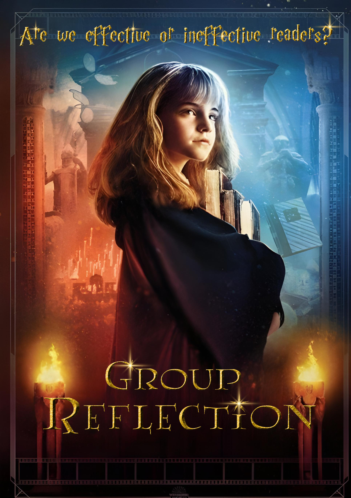
Our website is a creative and interactive platform inspired by Netflix, designed as the final output of our team project. Here, you will find not only the main website we developed but also supporting outputs that showcase our teamwork and dedication. These include our worksheets and reflections, highlighting the outputs we completed for Language Enhancement and Proficiency (LEAP). We invite you to explore our work and hope you enjoy the results of our efforts!
 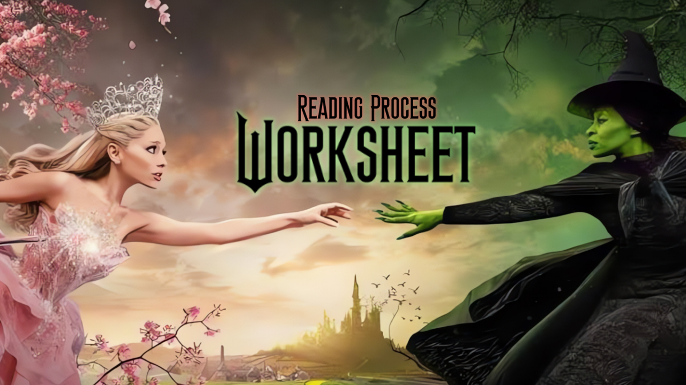
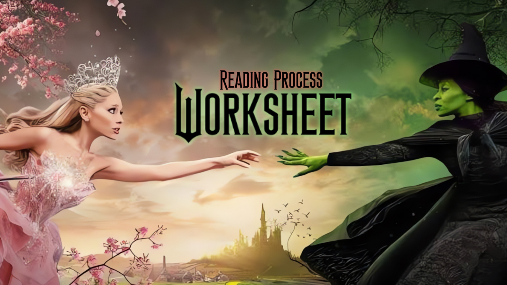
 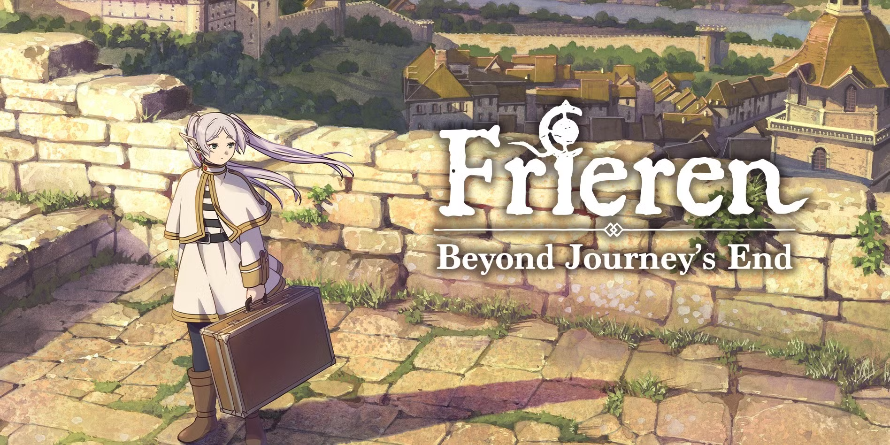
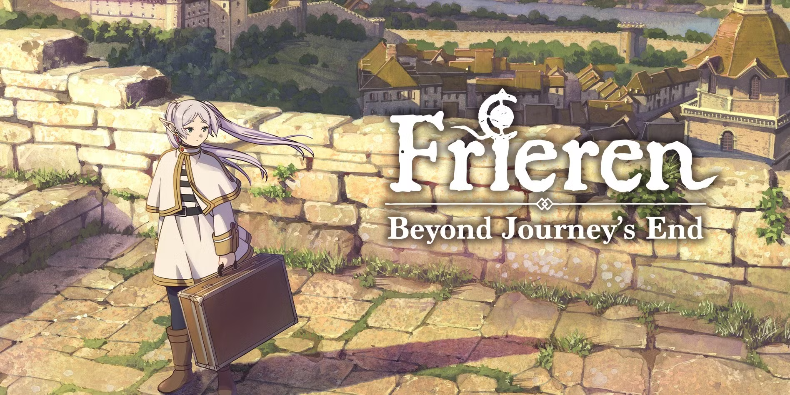
 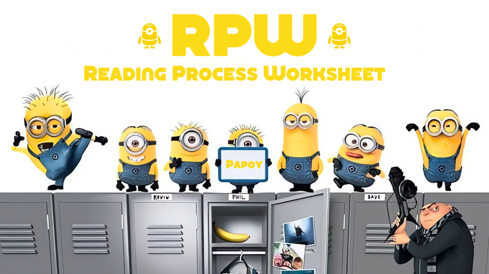
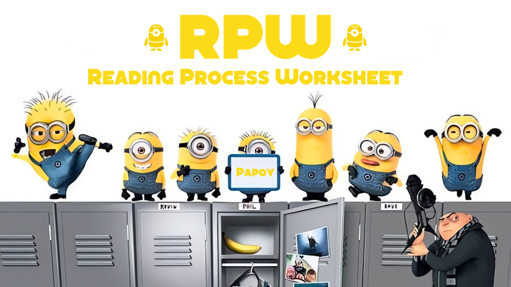


 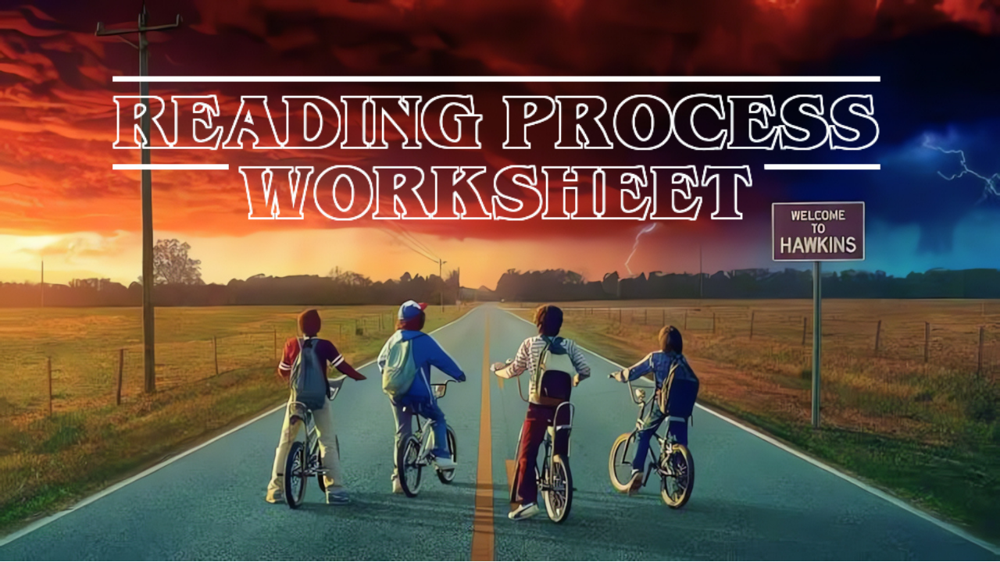
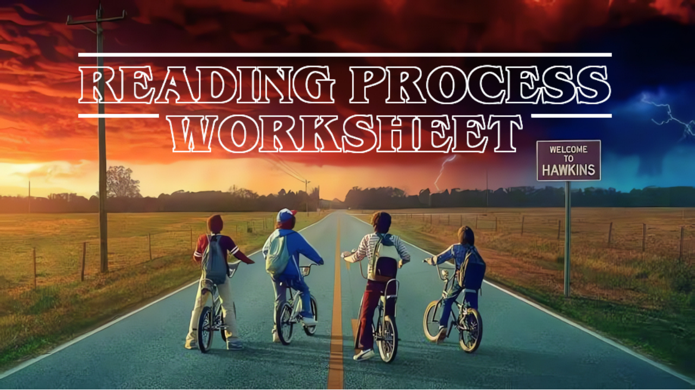
 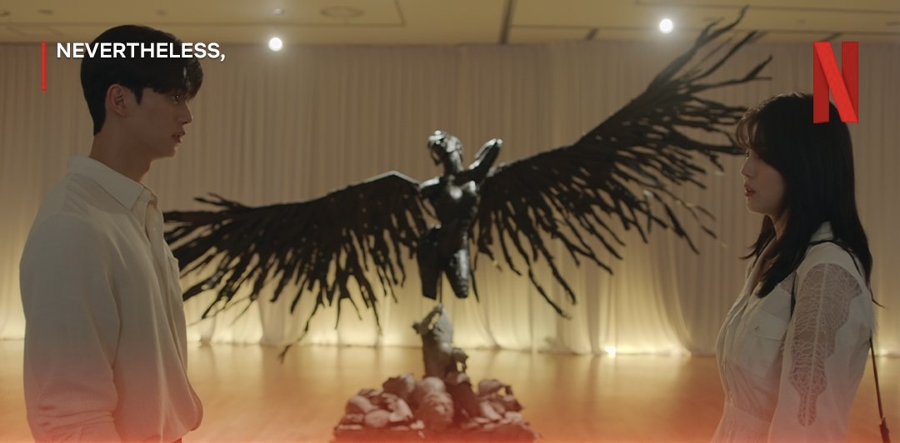
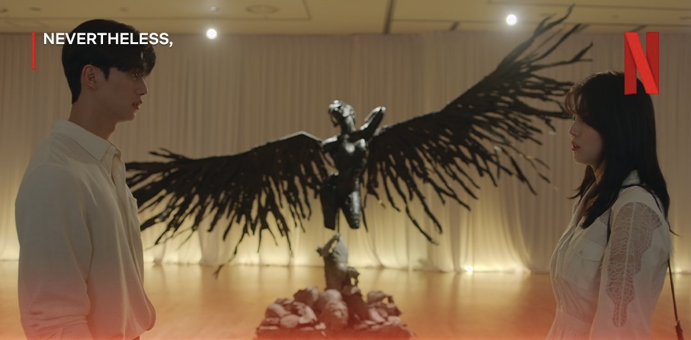

To pick up a book and turn the pages, eyes glancing over every line written down. Whether it be stories of fantasy and magic, or documents of studies and thesis to learn, reading has always been a life skill every person needs regardless if it’s a hobby or a requirement.
However, each and every person approaches reading differently. Some are avid bookworms, always borrowing novels from the library and visiting it frequently, while some fall asleep at the first page. Personally, I, Samantha De Lara, can relate to the latter when it comes to history books and Filipino literature.
I’d consider myself to be a great reader. I adore noticing the little details in stories, watching the characters grow from humble beginnings and into wonderful heroes, and the like. If I was given a poem to analyze, I’d begin waxing poetic as well in order to figure out what the author means with their work. In short, I have a love for this hobby… Well, most of the time. I do not like reading technical books much. It’s like melatonin for me.
In similar regards, Eirene Lituco shares the same dilemma as me. She has stated that her attention span was low, and she’d often lose focus and get distracted when reading blocks of text.
As a person who was more interested in visual media such as comics and shows, the only books that she has picked up and read all the way were stories that had pictures in them such as “Diary of a Wimpy Kid” and “Dork Diaries”. A helpful method that she’s found for herself was annotating, as it’d let her be more involved and personal with the book, which in turn captured her attention more.
As for Benedict Paule, he was a reader from a young age as well. He was fond of novels where magic and fantastic adventures were involved, such as “Harry Potter and the Sorcerer’s Stone” and “Narnia”, and finds this activity as a source of leisure. Even if he finds it difficult to find the time to actually sit down and pick up a book, due to his busy schedule, he always aims to continue this hobby regardless.
Jenny Wong has said that the importance of reading to her was great, as it was a valuable skill that would be needed all throughout our entire lives. However, she finds it her weakness in understanding more complex works of literature, needing her to deeply analyze a poem and seeing the metaphors through fanciful sentences. Even then, to help her through it, she’d often take notes and annotate as well, similar to Lituco, whenever she read.
Another method she used was pre-reading strategies such as activating prior knowledge about a certain topic, and relating it as well to her own experiences. If she were to read a poem, Wong would then recall past memories that are similar to the ones written down amongst the pages, in order to understand it better.
Stephen Tigno was much of the same, as he said that throughout the majority of his junior highschool life and until now, annotating has always been something that he’s been relying on whenever he reads. He’d make down key points, summarize paragraphs, and write in the margins of whatever he understands so he can look back on it later.
He’d also frequently skim the text and break large blocks of paragraphs into smaller, easier-to-digest sentences so that it wouldn’t be too heavy to read, a technique he used whenever there were complex topics to learn. Another thing that Tigno would do is that he’d practice active recall whenever he finished reading, trying to remember what the author’s argument was and summarizing it again in his head to make sure he understands the work.
Jargon and deep topics had also troubled Ashley Flora as well, as she has stated that she’d often struggle with vocabulary and words that she came across that she couldn’t understand. As such, whenever she found a specialized word that she didn’t know, she’d look it up on the internet and find out the meaning every time that it happened.
Another issue was that she’d struggle to read in front of other people, as she would stutter and jumble up her sentences due to her nervousness.
In order to help her with this, she employed similar reading strategies such as how Tigno and Wong did; scanning keywords which would help her understand the content before fully diving into it, and annotating sentences so that she could comprehend it more clearly.
Annotation has been said numerous times again and again when it comes to reading strategies from our group members, and I admit, it is a largely helpful technique to have whenever something complex that needs to be learned is needed. I enjoy highlighting texts more though with colorful pastels, making it stand out from the white paper and easier to recall when I do need it.
There are many different types of readers I have found, after reading through all the group member’s experience with this activity.
Whether they be bookworms who loved to keep their nose into a novel such as myself and Paul; studious people that seeked out this skill in order to learn more, such as Wong and Tigno; or even those who weren’t the biggest fans of reading in general, but strove to improve themselves regardless of the fact, like Lituco and Flora, all of us has benefitted from reading in our lives.
This is what makes us as readers.
To pick up a book and turn the pages, eyes glancing over every line written down. Whether it be stories of fantasy and magic, or documents of studies and thesis to learn, reading has always been a life skill every person needs regardless if it’s a hobby or a requirement. However, each and every person approaches reading differently. Some are avid bookworms, always borrowing novels from the library and visiting it frequently, while some fall asleep at the first page. Personally, I, Samantha De Lara, can relate to the latter when it comes to history books and Filipino literature. I’d consider myself to be a great reader. I adore noticing the little details in stories, watching the characters grow from humble beginnings and into wonderful heroes, and the like. If I was given a poem to analyze, I’d begin waxing poetic as well in order to figure out what the author means with their work. In short, I have a love for this hobby… Well, most of the time. I do not like reading technical books much. It’s like melatonin for me. In similar regards, Eirene Lituco shares the same dilemma as me. She has stated that her attention span was low, and she’d often lose focus and get distracted when reading blocks of text. As a person who was more interested in visual media such as comics and shows, the only books that she has picked up and read all the way were stories that had pictures in them such as “Diary of a Wimpy Kid” and “Dork Diaries”. A helpful method that she’s found for herself was annotating, as it’d let her be more involved and personal with the book, which in turn captured her attention more.
As for Benedict Paule, he was a reader from a young age as well. He was fond of novels where magic and fantastic adventures were involved, such as “Harry Potter and the Sorcerer’s Stone” and “Narnia”, and finds this activity as a source of leisure. Even if he finds it difficult to find the time to actually sit down and pick up a book, due to his busy schedule, he always aims to continue this hobby regardless.
Jenny Wong has said that the importance of reading to her was great, as it was a valuable skill that would be needed all throughout our entire lives. However, she finds it her weakness in understanding more complex works of literature, needing her to deeply analyze a poem and seeing the metaphors through fanciful sentences. Even then, to help her through it, she’d often take notes and annotate as well, similar to Lituco, whenever she read. Another method she used was pre-reading strategies such as activating prior knowledge about a certain topic, and relating it as well to her own experiences. If she were to read a poem, Wong would then recall past memories that are similar to the ones written down amongst the pages, in order to understand it better. Stephen Tigno was much of the same, as he said that throughout the majority of his junior highschool life and until now, annotating has always been something that he’s been relying on whenever he reads. He’d make down key points, summarize paragraphs, and write in the margins of whatever he understands so he can look back on it later. He’d also frequently skim the text and break large blocks of paragraphs into smaller, easier-to-digest sentences so that it wouldn’t be too heavy to read, a technique he used whenever there were complex topics to learn. Another thing that Tigno would do is that he’d practice active recall whenever he finished reading, trying to remember what the author’s argument was and summarizing it again in his head to make sure he understands the work.
Jargon and deep topics had also troubled Ashley Flora as well, as she has stated that she’d often struggle with vocabulary and words that she came across that she couldn’t understand. As such, whenever she found a specialized word that she didn’t know, she’d look it up on the internet and find out the meaning every time that it happened. Another issue was that she’d struggle to read in front of other people, as she would stutter and jumble up her sentences due to her nervousness. In order to help her with this, she employed similar reading strategies such as how Tigno and Wong did; scanning keywords which would help her understand the content before fully diving into it, and annotating sentences so that she could comprehend it more clearly.
Annotation has been said numerous times again and again when it comes to reading strategies from our group members, and I admit, it is a largely helpful technique to have whenever something complex that needs to be learned is needed. I enjoy highlighting texts more though with colorful pastels, making it stand out from the white paper and easier to recall when I do need it. There are many different types of readers I have found, after reading through all the group member’s experience with this activity. Whether they be bookworms who loved to keep their nose into a novel such as myself and Paul; studious people that seeked out this skill in order to learn more, such as Wong and Tigno; or even those who weren’t the biggest fans of reading in general, but strove to improve themselves regardless of the fact, like Lituco and Flora, all of us has benefitted from reading in our lives.
This is what makes us as readers.
| Headings | Subheadings | Description of Visuals |
| K | W | L |
| Details from the Text | Plausible Inferences |
| Technical Term | Context Clue | Use each technical term in a sentence |
.